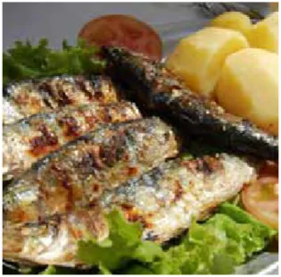

Kapitel 5 · Wein und Speisen kombinieren
Sardinha Assada

Frische junge Sardinen, über Holzkohle gegrillt, mit Olivenöl, Thymian, Rosmarin und Salz. Am besten im Sommer, wenn die Sardinen fetter sind.
Wein: Ein leichter Rosé, ein kalter weißer Vinho Verde oder Schaumwein passen gut zu gegrillten Sardinen. Auch einige leichte, gekühlt servierte Rotweine passen.
Erklärung: Salz und Tannin sind Feinde! Ein tanninreicher Rotwein schmeckt wegen der Salz- und Jodverbindungen des Fisches metallisch; deshalb passen Weine ohne Tannine, mit etwas Restzucker, fruchtbetont und mit mäßiger Säure recht gut. Wenn der Fisch saftig und fett ist, wird dieses Gericht zum Höhepunkt jedes geselligen Sommerabends.